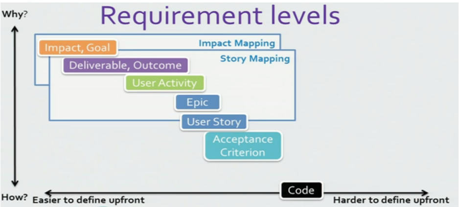

Clipit Portal
Technologies
iborn.net
Skopje 2016
Agenda
- ELK Stack: Elasticsearch, Logstash, Kibana
- Testing SQL: tSQLt
- Development Process
- SBE
ELK Stack: Elasticsearch, Logstash, Kibana
Elasticsearch
- Built on top of the Lucene search engine
- Distributed (Nodes, Indexes & Shards)
- Performance & Scalability
- Full text indexing & Analytical queries
- Competition? Solr, Google BigQuery
| Name | Elasticsearch | Google BigQuery | Solr |
|---|---|---|---|
| Description | A modern search and analytics engine based on Apache Lucene | Large scale data warehouse service with append-only tables | A widely used enterprise search engine based on Apache Lucene |
| Database model | Search engine | Relational DBMS | Search engine |
| Ranking Score (DB Engines) | 99.12 | 6.97 | 66.57 |
| Overall Rank (DB Engines) | #11 | #40 | #14 |
| Category Rank (DB Engines) | #1 (Search Engines) | #24 (Relational DBMS) | #2 (Search Engines) |
| Name | Elasticsearch | Google BigQuery | Solr |
|---|---|---|---|
| Developer | Elastic | Apache Software Foundation | |
| Initial release | 2010 | 2010 | 2004 |
| Current release | 2.4.1, September 2016 | 6.2.1, September 2016 | |
| License | Open Source | Commercial | Open Source |
| Cloud-based only | no | yes | no |
| Name | Elasticsearch | Google BigQuery | Solr |
|---|---|---|---|
| Implementation language | Java | Java | |
| Server OS | All OS with a Java VM | Hosted | All OS with a Java VM and a servlet container |
| Data scheme | Schema-free | yes | yes |
| Typing | yes | yes | yes |
| XML support | Logstash | no | |
| Secondary indexes | yes | no | yes |
| SQL | no | no | no |
| APIs and other access methods | Java API
RESTful HTTP/JSON API |
RESTful HTTP/JSON API | Java API
RESTful HTTP API |
| Name | Elasticsearch | Google BigQuery | Solr |
|---|---|---|---|
| Supported programming languages | .Net, Clojure
Erlang, Go, Groovy Haskell, Java, JavaScript Lua, Perl, PHP Python, Ruby, Scala |
.Net, Java, JavaScript
Objective-C, PHP Python, Ruby |
.Net, Erlang, Java
JavaScript any language that supports sockets and either XML or JSON Perl, PHP, Python Ruby, Scala |
| Partitioning methods | Sharding | none | Sharding |
| Replication methods | yes | cloud/distributed (via Zookeeper)
Master-slave replication |
Install & Configure
- Install Java (JDK)
- Extract Elasticsearch
- Configure: Cluster Name, Node Name, Network Host...
- Start up node:
> bin\elasticsearch.bat- Open in browser
http://localhost:9200/_cluster/health?pretty
Important Concepts
- RESTful HTTP/JSON API
- Organizational Hierarchy: Index\Type\Document(id)
- Mapings
- APIs: Document, Search, Indices...
- Query DSL: Full text, Matching, Joining, Geo,...
- | Docs | Get Started |
Architecture

Hardware Recomendations
- Memory: 64GB
- CPU: 2 - 8 cores
- Disks: SSD, RAID 0 (with deadline or noop scheduler)
- Network: 1 GbE, 10 GbE
- Prepare to scale and include nodes
- |Recomendations|
Logstash
- ETL: Extract Transform Load
- Replaces rivers
- Can be scheduled
- Can pull from DB, JSON, logs, XML...
- Rich, expressional commands
> bin\logstash.bat -f configuration.conf -v
Install & Configure
- Install Java (JDK)
- Extract Logstash
- Configure: create a config file (next slide)
- Start up agent:
> bin\logstash.bat -f configuration.conf -v
Configuration skeleton
input {
file {
}
}
filter {
xml {
}
mutate {
}
}
output {
}
Input file configuration
file
{
path => "_path_to_xml_file_"
start_position => "beginning"
sincedb_path =>"_path_to_since_db_txt_file_"
codec => multiline {
charset => "_charset_name_(UTF-8|UTF-16|...)"
max_bytes => "_limit_in_mega_bytes_ MiB"
max_lines => 50000
pattern => "_regex_pattern_"
negate => "true"
what => "previous"
}
}
Input jdbc configuration
jdbc {
jdbc_driver_library => "C:\Program Files (x86)\Microsoft JDBC Driver 4.2 for SQL Server\sqljdbc_4.2\enu\sqljdbc42.jar"
jdbc_driver_class => "com.microsoft.sqlserver.jdbc.SQLServerDriver"
jdbc_connection_string => "jdbc:sqlserver://_server_ip_;user=_user_;password=_password_;"
jdbc_user => "_user_"
jdbc_password => "_password_"
statement => "SELECT [Id] AS id,[Text] AS text FROM [_db_name_].[dbo].[_table_name_]"
}
xml & mutate filters
xml {
source => "message"
target => "target_type"
xpath => [
"/ElementName/@id","id",
"/ElementName/SubElementName/text()","text",
]
}
mutate {
join => [ "id", ""]
update => { "message" => "%{id}"}
join => [ "text", ""]
update => { "message" => "%{text}" }
}
output
output {
stdout {
codec => "rubydebug"
}
elasticsearch {
hosts => "_host_address_"
index => "_index_name_"
document_type => "_document_type_"
document_id => "%{[id]}"
}
}
Kibana
- Data Visualization Platform
- Data Analysis
- Connects with Elasticsearch
- On-demand and Scheduled PDF Reports, Exports
- Bar Charts, Line and Scatter Plots, Histograms, Pie charts, Maps...
Install & Configure
- Install Java (JDK)
- Extract Kibana
- Configure: set elasticsearch.url
- Start up Kibana:
> bin\kibana.bat
Open http://localhost:5601/
Testing SQL
- Why?
- How?
- What Next?
Why?
- Quality
- Stability
- Performance
- Never forget test cases!
- Faster testing
How?
- tSQLt
- Database unit testing framework for MS SQL
- Transactional behaviour
- Grouping tests in classes
- Fake tables
- Seeding data with setup procedure
- Various assert functions
How?
- Configure & Install tSQLt
- Create a test class
- Create a setup procedure
- Create test procedures
- Run tests
- Clean up
Configure & Install tSQLt
- Download tSQLt
- Enable CLR & Trustworthy
IF NOT EXISTS (SELECT 1 FROM sys.configurations WHERE name = 'clr enabled' AND value = 1)
BEGIN
PRINT ('CONFIGURE CLR -> ENABLED')
EXEC sp_configure 'clr enabled', 1;
PRINT ('RECONFIGURING')
RECONFIGURE;
END
DECLARE @cmd NVARCHAR(MAX);
SET @cmd='IF NOT EXISTS(
SELECT 1 FROM sys.databases WHERE name=''' + DB_NAME() + '''
AND is_trustworthy_on = 1) BEGIN PRINT (''SET TRUSTWORTHY -> ON'')
ALTER DATABASE ' + QUOTENAME(DB_NAME()) + ' SET TRUSTWORTHY ON; END';
EXEC(@cmd);
- Execute tSQLt.class.sql
- Everything is in the tSQLt schema
Test class & setup procedure
EXEC tSQLt.NewTestClass '_procedureName_Tests';
CREATE PROCEDURE reportdef_NewsItemTrend_Tests.[SetUp]
AS
BEGIN
EXEC tSQLt.FakeTable 'dbo._TableName_';
INSERT INTO dbo._TableName_
([ID], [ForeignKeyID], [Text])
VALUES
(1, 2, 'Some text')
END
GO
Test procedure
CREATE PROCEDURE _procedureName_Tests.[_test_name]
AS
BEGIN
IF OBJECT_ID('tempdb..#Actual') IS NOT NULL DROP TABLE #Actual;
IF OBJECT_ID('tempdb..#Expected') IS NOT NULL DROP TABLE #Expected;
CREATE TABLE #Actual ([ID] int)
SELECT * INTO #Expected FROM #Actual
INSERT #Actual
EXEC [dbo].[_procedureName] @_param = 1
INSERT INTO #Expected ([ID])
VALUES
(1)
EXEC tSQLt.AssertEqualsTable '#Expected', '#Actual';
END
GO
Run tests & Cleanup
EXEC tSQLt.Run 'reportdef_NewsItemTrend_Tests';
EXEC tSQLt.DropClass 'reportdef_NewsItemTrend_Tests';
What Next?
- Increase coverage
- Create performance tests
- Use tests in development
- Automate and integrate with deployment
Development Process
- Branching
- Code Review
Git Branching Model
Decentralized but centralized
- Origin
- Centralized push-pull relationship
- Subteams
The main branches
- master
- develop

The supportive branches
- Feature branches
- Release branches
- Hotfix branches
Feature branches
- These branches are used to develop new features for the upcoming or a distant future release.

Release branches
- Release branches support preparation of a new production release.
- The key moment to branch off a new release branch from develop is when develop (almost) reflects the desired state of the new release.
Hotfix branches
- They arise from the necessity to act immediately upon an undesired state of a live production version.
Code Review
- Catch bugs earlier in the development process
- Improve code quality and maintain architecture
- Implement standards
- Motivate each other to make better solutions
- Share knowledge and gain experience faster
When a feature branch is completed

When a release branch is ready for production
When a hotfix branch is ready for production
Behavior-driven development
BDD is an "Outside-in" methodology

User Story
- "I" ndependent (of all others)
- "N" egotiable (not a specific contract for features)
- "V" aluable
- "E" stimatable (to a good approximation)
- "S" mall (so as to fit within an iteration)
- "T" estable (in principle, even if there isn't a test for it yet)
The structure
The narrative part
Acceptance criteria
Given - When - Then
How we do it at IBorn